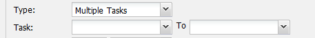
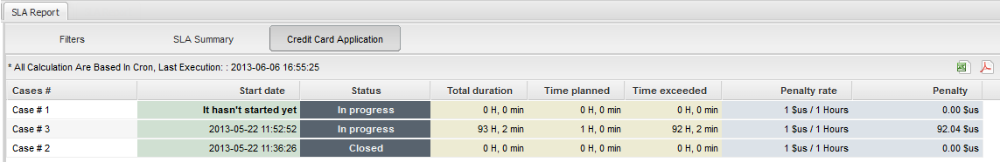

Release Notes | Downloadable version
 Plugin Version: 2.0.9
Plugin Version: 2.0.9
Introduction
The Service Level Agreement plugin offers a new level of control over unfinished tasks and processes, which means that this will help users to have a strict control over task and processes executed by any user assigned to it, avoiding any possible delay on sending information that may be important, all this while the process will be active; moreover, it will help to follow up unfinished tasks.
This plugin allows users to have a workflow control according to specific conditions set by an admin user, also penalties may be defined depending on exceeded time while a task or process is being executed. The admin user will have the possibility to generate reports based on the SLA information set for process. If it was set a penalty for hours exceeded this will be reflected on the report.
Requirements
- Simple Report Plugin v 1.4.20 installed and enabled.
- ProcessMaker installed or upgraded to version 2.5
- Create an admin user with who will have the PM_SETUP_ADVANCE permission in his/her role.
- Having the cron configured correctly.
- Configure Calendars since penalties are calculated according to calendar configuration.
Installation and Configuration
Login to ProcessMaker with a user such as "admin" who has the PM_PLUGINADVANCE permission in his/her role. Then, go to ADMIN > Plugins and click on the Import button in the toolbar to import the Enterprise Edition with the pmSLA.
After importing the plugin, then enable it by going to ADMIN > Plugins > Enterprise Edition and selecting the plugin from the list. Then click on Enable in the toolbar. The status of the plugin should then change to Enabled.
Configuring the Service Level Agreement
After the plugin was enabled, go to ADMIN > Settings and at the end of the list the option SLA will be added. By clicking on this option the SLA information will display:

It will list all process which SLA was applied.
Creating a new Service Level Agreement
Click on New to create a new SLA, it is possible the creation of more than one SLA depending on processes created on this specific workflow. This means that only it will take into account process created in the current environment in which the SLA will be set.
SLA form to be filled out will be:

Where:
SLA Information
- Process: Process on which the SLA will be applied.
- Name: SLA Name.
- Description: Brief description of the SLA.
- Status: it indicates the status of the SLA. Status to apply: Active or Inactive.
SLA Type
- Type: It indicates SLA type, which are:
-
- Entire Process: The SLA will be applied for the entire process.
-
- Multiple Tasks: If this option is selected, user has the possibility to choose the range of tasks the SLA will be applied. Set Task and To to specify range of the task.

-
- Task: Select task SLA will be applied.
-
- Duration: define the maximum duration SLA will have. Expressed on Days and Hours.
-
- Condition: Condition that must be accomplished to have the SLA executed.
Activate Penalty
This section is optional, if some penalties needs to be defined, enable this option by marking the checkbox Activate Penalty.
-
- Penalty Value: These fields indicate the penalty value for the SLA. It will depend on an Enterprise rules if penalties will be charged in dollars or in points.
-
- Penalty Time: These fields indicate the exceeded hours to take into account in applying the penalty.

Generating SLA Reports
As it was mentioned before, to generate SLA reports, Simple Report Plugin must be enabled, otherwise it won't be possible to access them. Once the SLA penalties was configured, and cases were started, Cron must be executed in order to generate reports. Then go to Home tab and at the end of the cases list the Reports icon will be added (only if the Simple Reports plugin is enabled); by accessing this option a window will be loaded on the right side of the screen.
For the purpose of this document, types of report were divided into 4 sections, which will be explained as follows.
Section 1: Filters
Filters allow to set different search criteria to generate a final report:

Where:
- SLA: A list with all SLA created will display. It is possible to generate a report by choosing - All - SLA created.
- Dates: Select the date(s) when SLA had been applied. By selecting an option from the list a new filed with a date picker will display where a specific date must be selected. Possible options to select:

-
- Greater than: This filter will consider dates greater than the one which was selected on the field.
- Greater or equal than: This filter will consider dates greater or equal than the one which was selected on the field.
- Less than: This filter will consider dates Less than the one which was selected on the field.
- Less or equal than: This filter will consider dates Less or equal than the one which was selected on the field.
- Between: This filter will consider dates between to selected form the corresponding fields, based on the one which was selected on the field.
- Exceeded: Select the option to search if SLA time set was exceeded or not. Possible options to select:
-
- Not Exceeded: Use this filter if time set previously was not exceeded.
- Exceeded by less than: Use this filter if time exceeded was less than: 1 or 2 hours.
- Exceeded by more than: Use this filter if time exceeded was more than: 1 or 2 hours.
For the last two options a new field will display next to thew dropdown when the hour will be selected:

- Status: filter by case status. Possible status to select: open, completed or -All-.
Once filters are set, click on Generate Report button. If filters need to be reset and set them again, click on Clear Filter button.
Section 2: SLA Summary
If Generate Report button was clicked, a summary of the report will generate and open in a new tab:

The summary will detail:
- All calculations are based in cron: All penalties will calculated as soon the cron is executed. So, time shown on this section is the time of the cron execution.
- SLA Name: Name of the SLA given when it was created.
- Cases executed :: Number of cases executed per SLA created.
- Total Duration: Total duration of the Process.
- Time planned: Time planned to start counting penalties.
- Time exceeded: This is based on the duration of the task or process, depending the SLA configuration.
- Average exceeded: Time exceeded, based on the duration of the task or process.
- Penalty rate: Penalty rate defined when the SLA was created.
- Penalty: Based on the penalty value. This value will be calculated according to time exceeded.
This report is available to export on PDF or DOC format. It's worth mentioning that the report will be generated based on the general information displayed on the current page.

Section 3: SLA Detailed Report
By clicking on one of the SLA generated on Section 2, the report will be detailed according to each case executed for the process or task where SLA was set. This will open on a new tab:

As you can see, each case is calculated individually; moreover, it shows the status of the case and if this hasn't started yet. This report can be also generated as DOC or PDF

Section 4: SLA Cases
When the report mentioned on Section 3 was generated, click on an specific case to check its detailed information. This will be opened on a new tab:

Example: Credit Card Application using SLA
For purposes of the plugin explanation, an example based on the Credit Card Application process will be used. Follow steps below in order to create a SLA policy:
Step 1: Go to Admin > Settings and click on SLA option. Configure the penalties to be applied as follows:

According to the information, the penalty will be applied only for the first task of the process, Application, this task will have a duration of 1 days, if the time exceeds ten days and the task has not been derivated, a penalty of 2 dollars will be charged for each hour exceeded.
Step 2: Start a case and fill the information of the first dynaform, at this point do not derivate the case.
Step 3: Let's pretend the user has not completed this task, and it is stored in Draft folder, also, 10 days passed since this task was started. What's next is executing the cron to generate the report.
Step 4: Once the cron was executed, go to Home and at the end of the cases List, the Reports option will be displayed, click on that option to check the report generated, on the Filter, select the name of the SLA created to have a more specific report:

Step 5: Click on Generate Report to see the final report, the summary will open in a new tab:

The summary will detail:
- SLA: Name of the SLA given when it was created, Credit Card Application Policies, in the case of the example.
- Times Executed: 3 cases, for this specific example.
- Total duration: 270 H, 32 min based on total time penalty .
- Time planned: 1 H, 0 min based on total time penalty .
- Time exceeded: 269H 32 min, based on the duration of the task set for one day.
- Average exceeded: 89H 50 min.
- Penalty: 1$us/1 hour, based on the penalty value, in the case of the example 1 $us for each hour exceeded.
Step 6: If user doesn't need to print the a detailed report, just click on the Excel or PDF icon to generate the report of the current page.

If user needs a specific report, double click over the report and a new window will open with a detailed report listed by cases. At this point it is recommended to know case number of user which penalty will be applied. On the last column, the case status can be verified. Finally, this report can be exported as PDF and/or DOC.